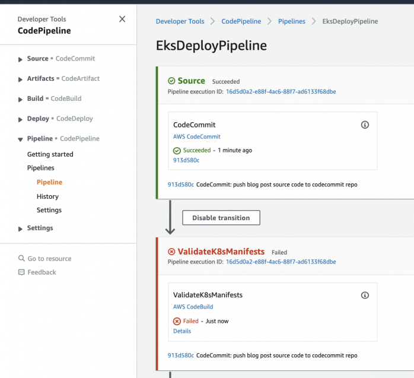
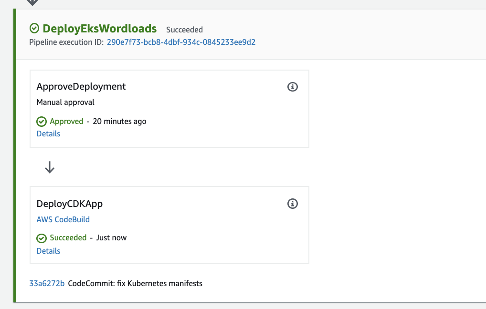

EKS Preventive Control
Tools:
Amazon Elastic Kubernetes Services (EKS)
A fully managed service that helps customers run their Kubernetes clusters at scale by minimizing the efforts required to operate a Kubernetes control plane.Â
AWS Cloud Development Kit (CDK)
Infrastructure-as-code tool, including EKS cluster, Kubernetes workloads and a CI/CD pipeline.
Confest
An open-source tool within CNCF Open Policy Agent suite, to automate preventative controls before the deployment step.
Overview
The pipeline in this solution starts with a commit to the CodeCommit repo with the Kubernetes manifest files to be deployed onto EKS cluster. CodeBuild will then run Conftest prepackaged with control policies to validate the Kubernetes manifest files. If any control policy is breached by the Kubernetes manifest files, CodeBuild will stop the process and prevent the Kubernetes manifest files from being deployed into the run-time environment. If all control policies are satisfied by the Kubernetes manifest files, then the pipeline will pass the validation step and move on to deployment. The deployment step will provision an EKS cluster with an AWS managed worker node group then deploy the Kubernetes manifests onto the EKS cluster.
Steps:
- Create a new empty AWS CodeCommit Repo that will be used by the CI/CD pipeline as the code source.
- Download the blog source code from the AWS public repo and check into the empty CodeCommit repo created in step 1.
- On the development terminal, run the CDK deploy command to provision the CI/CD pipeline.
- Validate the Kubernetes validation step in the CI/CD pipeline stops the pipeline due to the Kubernetes manifests violating preventative control policies.
- Fix the Kubernetes manifests and push the changes to CodeCommit repo.
- Validate the CI/CD pipeline is triggered again and this time it passes the Kubernetes validation step.
- Tick the manual approval step in the CI/CD pipeline.
- Validate the pipeline successfully provisions an EKS cluster with Kubernetes manifests via CDK deploy.
1. Create a Repo
Create a new empty AWS CodeCommit repo (following step 1 & 2 in this article) and git clone that empty repo to your development terminal.
2. Example Code
On your development terminal, git clone the source code of this blog post from the example AWS code repo here.
3. Move the Example Code to Your Empty Repo
Copy the source code of the blog post cloned in step 2 to the other local directory linked to the empty CodeCommit repo created in step 1 And then commit and push all the code
4. Configure
Configure the CDK context parameters that will be used to provision the pipeline:
In cdk.json:
5. Deploy
Provision the CodePipeline instance in your AWS account.
6. Manifest
By now, we have successfully provisioned a CI/CD pipeline with embedded Kubernetes preventative control policies. Validation: Log onto the AWS Management Console and go to the CodePipeline service page, you should see a pipeline named EksDeployPipeline as shown below:
Looking into the "Details" why the pipline is failing, we can see that there are policy breach in Kubernetes. Hence, the CodeBuild step sets its BUILD state as FAILED and stops the pipeline from deploying the Kubernetes workloads into runtime environment.
In order to deploy the Kubernetes manifests, we need to fix those non-compliant issues:
7. Finish
Commit and push the changes. And remeber to approve it manualy!
Then you will be able to build the pipeline successfully.

Yeah! You've done it!😊